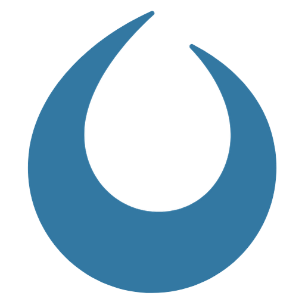

Il modo più semplice: Borin Ecosystem
Mostra tutti i programmi, li installa con un clic e li tiene aggiornati. Nei PC dell'ufficio il token di accesso arriva da solo dalla rete (altrimenti lo inserisce l'amministratore); poi i programmi nuovi compaiono da soli.
-

Editor PRO
Presentazioni, planimetrie e schede tecniche, con pallini, legende e richiami. Esporta in PDF e per InDesign.
-

Provision Tour Editor
Tour virtuali a 360° e tour fotografici con frecce, popup e aree cliccabili, esportati come sito pronto.
-

QR Studio
Codici QR con il logo al centro, colori, gradienti ed effetti, esportati in PNG fino a 2000 px.
-

Borin Client Finder
Crea le cartelle di clienti e commesse con la struttura standard e trova un cliente in tutti gli archivi.
-
Borin Ecosystem
Installa, aggiorna e apre tutti gli altri programmi, con riferimenti e script a portata di clic.